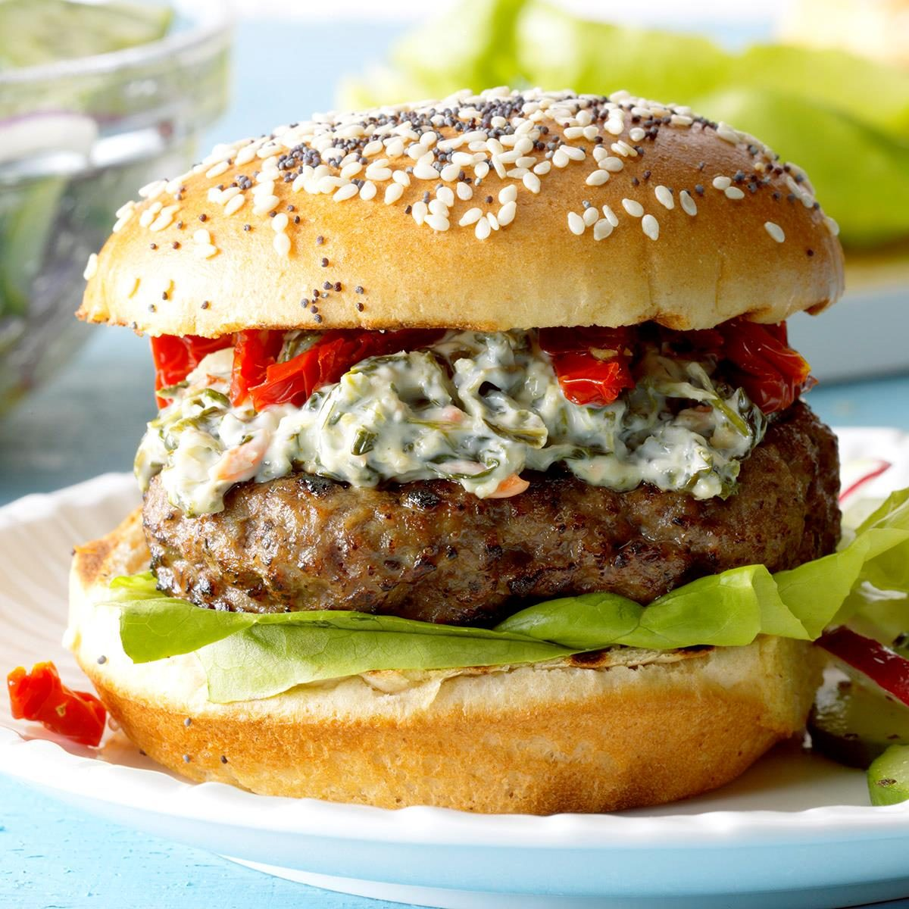

Spinach Tomato Burgers

Every Friday night is burger night at our house!
The tomatoes add fresh flavor
and the cool spinach dip brings it all together. We often skip the buns and serve these over a bed of grilled cabbage.
Ingredients
- 1 large egg, lightly beaten
- 2 tablespoons fat-free milk
- 1/2 cup soft bread crumbs
- 1 teaspoon dried basil
- 1/2 teaspoon salt
- 1/4 teaspoon pepper
- 1 pound lean ground beef (90% lean)
- 4 whole wheat hamburger buns, split
- 1/4 cup spinach dip
- 1/4 cup julienned soft sun-dried tomatoes (not packed in oil)
- Lettuce leaves
Directions
- Combine first 6 ingredients. Add beef; mix lightly but thoroughly. Shape into four 1/2-in.-thick patties.
- Place burgers on an oiled grill rack or in a greased 15x10x1-in. pan. Grill, covered, over medium heat or broil 4-5 in. from heat until a thermometer reads 160°, 4-5 minutes per side.
Grill buns, cut side down, over medium heat until toasted. Serve burgers on buns; top with spinach dip, tomatoes and lettuce.
Tips
- To make soft bread crumbs, tear bread into pieces and place in a food processor or blender. Cover and pulse until crumbs form. One slice of bread yields 1/2 to 3/4 cup crumbs.
This recipe was tested with sun-dried tomatoes that do not need to be soaked before use.
- Using lean ground beef instead of beef that's 80% lean saves 45 calories per 4-ounce serving of beef. Lean ground beef is also 29% lower in saturated fat.